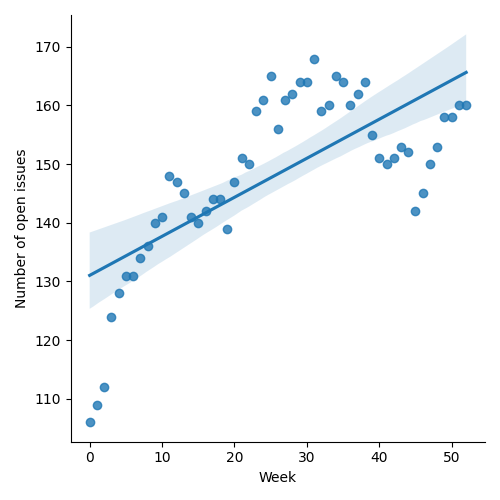
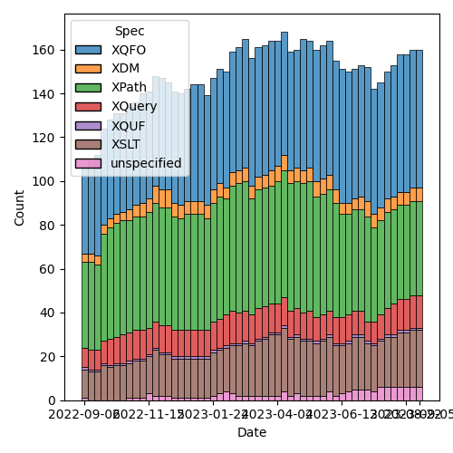
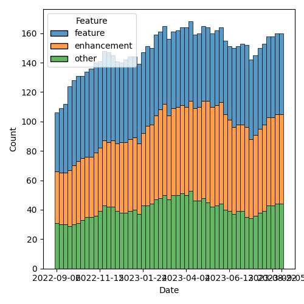

QT4 CG Meeting 044 Minutes 2023-09-05
Table of Contents
Agenda index / QT4CG.org / Dashboard / GH Issues / GH Pull Requests
Minutes
Approved at meeting 045 on 12 September 2023.
Summary of new and continuing actions [0/5]
[ ]QT4CG-002-10: BTW to coordinate some ideas about improving diversity in the group[ ]QT4CG-026-01: MK to write a summary paper that outlines the decisions we need to make on “value sequences”- This is related to PR #368: Issue 129 - Context item generalized to context value and subsequent discussion.
[ ]QT4CG-029-07: NW to open the next discussion of #397 with a demo from DN See PR #449[ ]QT4CG-039-01: NW to schedule discussion of issue #52, Allow record(*) based RecordTests[ ]QT4CG-042-01: NW to use sequences instead of arrays inparse-urioutput.[ ]QT4CG-042-02: NW to make the query into a simple map with repeated values.[ ]QT4CG-042-03: NW to consider revisions to query parses.
1. Administrivia
1.1. Roll call [10/11]
Regrets: SF for 5 and 12 September.
[X]Reece Dunn (RD)[ ]Sasha Firsov (SF)[X]Christian Grün (CG)[X]Joel Kalvesmaki (JK)[X]Michael Kay (MK)[X]John Lumley (JL)[X]Dimitre Novatchev (DN)[X]Ed Porter (EP)[X]C. M. Sperberg-McQueen (MSM) [x:15-][X]Norm Tovey-Walsh (NW). Scribe. Chair.[X]benibela
1.2. Accept the agenda
Proposal: Accept the agenda.
Accepted.
1.2.1. Status so far…

Figure 1: “Burn down” chart on open issues

Figure 2: Open issues by specification

Figure 3: Open issues by type
1.3. Approve minutes of the previous meeting
Proposal: Accept the minutes of the previous meeting.
Accepted.
1.4. Next meeting
The next meeting is scheduled for Tuesday, 12 September 2023.
Regrets from JL, SF. Possible regrets from DN.
- NW: We’re overdue for an XSLT focused meeting.
1.5. Review of open action items [1/8]
[ ]QT4CG-002-10: BTW to coordinate some ideas about improving diversity in the group[X]QT4CG-016-08: RD to clarify how namespace comparisons are performed.[ ]QT4CG-026-01: MK to write a summary paper that outlines the decisions we need to make on “value sequences”- This is related to PR #368: Issue 129 - Context item generalized to context value and subsequent discussion.
- CG: I’ve updated 129, I could go through it if we put it on the agenda
[ ]QT4CG-029-07: NW to open the next discussion of #397 with a demo from DN See PR #449[ ]QT4CG-039-01: NW to schedule discussion of issue #52, Allow record(*) based RecordTests[ ]QT4CG-042-01: NW to use sequences instead of arrays inparse-urioutput.[ ]QT4CG-042-02: NW to make the query into a simple map with repeated values.[ ]QT4CG-042-03: NW to consider revisions to query parses.
2. Technical Agenda
2.1. Review of open PRs
Review of open PRs:
- PR #664: 663 xsl:original keywords
- MK: I just revised this one editorially. It’s a 1 paragraph change.
- Proposal: merge it.
- Accepted.
- PR #659: 647: schema location hints
- MK: A fairly substantial change, needs careful review.
- … There are technical changes needed
- MK: A fairly substantial change, needs careful review.
- PR #650: 649: fix an xsl:fallback problem
- MK: Essentially a bug fix. Someone discovered that if you write an
xsl:fallback instruction with a select attribute, the attribute is ignored.
- … The only slightly controversial thing is a note about XSLT 3.0
- MSM: If I have something in version N+1 and I’m using an N-1 processor, and I have something in that falls back to N, with another fallback to N-1.
- MK: Yes, you can do that by explicitly attaching version attributes everywhere.
- Proposal to leave this a week and then merge it next week.
- MK: Essentially a bug fix. Someone discovered that if you write an
xsl:fallback instruction with a select attribute, the attribute is ignored.
- PR #640: 601: fn:all → fn:every?
- CG: This is what we discussed at the end of July. This renames a function.
- Proposal: merge it.
- Accepted.
- PR #635: 451: Schema compatibility
- MK: This belongs with 647 and requires discussion. This has to do with how validated documents are passed between stylesheets that import different schemas.
- PR #633: Edits ch. 4.1 through 4.15
- Proposal: merge it.
- Accepted.
- Proposal: merge it.
- PR #631: 600: fn:decode-from-uri
- CG: This is a proposal for the opposite of encode-for-uri.
- MK: Some of my comments were wrong; I think CG has done the right things.
- CG: I mostly described what Java and perhaps Python do.
- Proposal to leave this a week and then merge it next week.
- PR #623: 93: sort descending
- MK: Significant new functionality for the fn:sort function.
- Proposal to leave this a week and then merge it next week.
- PR #619: XDM ch. 6 minor edits
- Proposal: merge it.
- Accepted.
- Proposal: merge it.
- PR #599: 90: Simplified stylesheets with no xsl:version
- MK: They’re a bit under used. This tries to make it a slightly nicer idea. If you eliminate the need to have a version attribute, then you can also avoid the namespace declaration.
- Proposal to leave this a week and then merge it next week.
- PR #538: Attempt to allow xs:string to be 'promoted to' xs:anyURI
- Leave for the future
- PR #529: 528: revision of json(), and renaming to xdm-to-json()
- Leave for the future
- PR #470: 369 add fixed-prefixes attribute in XSLT
- Leave for the future
- PR #412: 409, QT4CG-027-01: xsl:next-match
- MK: Turned out to be a lot more difficult than I expected. We’ve expanded what can match, for example record types, which don’t form a strict hierarchy. This makes it far from obvious what the “next match” should. be.
- PR #368: 129: Context item generalized to context value
- Leave for the future
2.2. Review of open issues
Taking a “strike while the iron is hot” approach, are there any issues currently being actively discussed in email or comments that would benefit from meeting time?
- JK: Traversal of arrays and maps in a convenient fashion is high priority
- MK: There’s a bundle of issues in that area
- NW: I’ll make that bundle of issues a topic for another meeting.
- MK: What it needs to make that discussion successful is a structured discussion of the issue.
- JK: I can try to facilitate that conversation.
- NW: Fab!
What about the fold-right question, issue #670?
- MK: I think that needs distilation to a few specific items that need to be added.
- DN: I would say that I disagree. It was specifically mentioned that
we need short-circuiting and generators.
- … The whole thing depends on having a proposal for generators.
- … There are many comments, but I think still I’m right about the core of the proposal.
- CG: DN, I was just asking. I remember that you said this proposal could show how the problems could be solved with XPath. Is it just something that we should think about?
- DN: I think we need a separate proposal for generators. Right now we have an example, but not a specification.
- RD: Are the issues with fold-right down to the implementation? In
other words, is it possible to create an implementation that
implements fold-right and other functions like that which make use
of things like generators and lazy-evaluation?
- … My understanding was that that would be the case.
- DN: I think one could try to add additional arguments to fold-right, but this would be a very different function.
- RD: I’m not talking about adding things, as it is currently defined is it possible to implement generator-based or lazy implementations of them.
- DN: The short answer is “no”. It doesn’t accept a function that generates the input one-by-one.
- RD: There’s language in implementation because in languages that
have tail recursion, you don’t necessarily need to say this is a
tail recursive function. The implementation can work that out and
optimize it not to use recursion at all.
- … If we say “this is how we support generators” or something like that, it becomes something that the user has to know about. But if it’s possible for the implementation to note that an array can be adapted to a sequence generator, then the performance benefits are transparent to the user.
Some further discussion about implementation details and whether or not users have to know about generators.
- DN: Generator functions in C# need a lot of compiler support. I want to avoid that.
- CG: Lots of things in this issue are really implementation details.
- DN: I think the first few comments make the problem clear.
- RD: An interesting use case for generators would be the random generator.
- CG: Some time ago I added a discussion label. I’ve assigned it to all issues that are too broad to end up in a proposal. Whenever you think something is more concrete start a new issue.
2.3. Broader planning
- NW: This section of the agenda is about having a conversation about when we can finish.
- RD: Rather than specific closing off issues, would it make sense to have a 4.0 and a future milestone.
- CG: I noticed that there are some things in the specification that haven’t been finalized. We don’t know which features are final. We should discuss everything that has been added to the specification.
- MK: I’ve tried to add issues for all those features and to tag them as “needs comfirmation”.
Chairs will make sure the “requires confirmation” issues are on an agenda real soon now.
- RD: We’ve also had previous discussion on record tests.
- MK: I think we almost got to the end of record tests, but we didn’t quite finish. There’s a high degree of consensus.
Anything else for this item?
- CG: We could prioritize the issue with “proposed 4.0” label.
- NW: Yes, good idea.
- MK: I think we should try to keep the doors open for a little bit longer. Certainly until the end of the year and then perhaps start the new year with a concerted attempt to wrap things up.
- NW: Also a good idea! The chairs will return to the “broader planning” topic in January.
3. Any other business?
None heard.